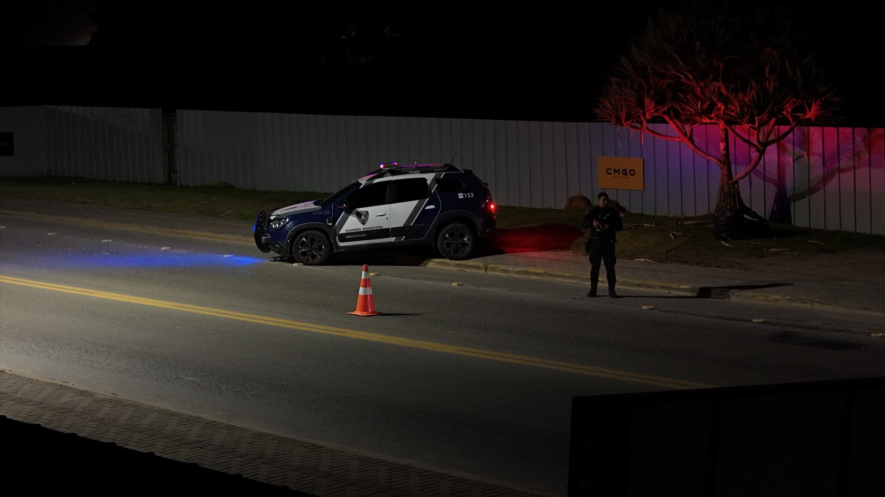

Guarda Municipal e Fiscalização vistoriam seis conveniências de Itapema depois de denúncias de barulho
O mesmo tipo de chamado que lidera o balanço de Porto Belo, do outro lado da divisa.
O balanço de janeiro a junho traz 164 chamados por perturbação do sossego, 72 acidentes de trânsito e 54 atendimentos da Patrulha Maria da Penha.
Em 30 segundos · Modo de Leitura, formato original Santa Informa
A Guarda Municipal de Porto Belo atendeu mais de 3,2 mil ocorrências no primeiro semestre de 2026.
O período contado vai de janeiro a junho.
O chamado mais comum foi perturbação do sossego, com 164 atendimentos.
Foram 72 acidentes de trânsito atendidos.
A Patrulha Maria da Penha fez 54 atendimentos.
Houve 23 furtos, 3 roubos e 15 ocorrências de tráfico e posse de drogas.
Foram 10 atendimentos de violência doméstica e 7 de lesão corporal.
A corporação também fez 27 abordagens a pessoas em situação de rua.
O Município comprou armamento, fardamento, coletes e viatura, e pagou cursos de capacitação.
Poder PúblicoPublicada em Redação Santa Informa

A Guarda Municipal de Porto Belo fechou o primeiro semestre de 2026 com mais de 3,2 mil ocorrências atendidas. O balanço é da Prefeitura de Porto Belo e cobre o período de janeiro a junho. No intervalo, a corporação trabalhou em frentes diferentes, da prevenção de crime à fiscalização e ao atendimento de emergência.
O campeão de chamado foi perturbação do sossego, com 164 atendimentos. Depois vieram os 72 acidentes de trânsito. A lista segue com 54 atendimentos da Patrulha Maria da Penha, 27 abordagens a pessoas em situação de rua, 23 furtos, 15 ocorrências ligadas a tráfico e posse de drogas, 10 atendimentos de violência doméstica, 7 de lesão corporal e 3 roubos. Somados, esses tipos não chegam perto do total, o que mostra quanta coisa cabe no dia a dia da Guarda fora das categorias que viram manchete.
Os 54 atendimentos da Patrulha Maria da Penha no semestre são acompanhamento de mulher em situação de violência, com visita e monitoramento de medida protetiva. Já o programa Escola Segura mantém ronda perto das unidades de ensino nos horários de entrada e saída dos alunos. Na parte de trânsito, a corporação faz blitz, ações de PCTran e orientação a motorista e pedestre.
A Prefeitura informa que investiu na estrutura da Guarda no período, com aquisição e renovação de armamento, fardamento e coletes, a compra de viatura e a oferta de cursos de capacitação para os agentes.
Porto Belo faz divisa com Itapema e divide com ela o mesmo problema de temporada: a população multiplica no verão e a demanda por atendimento acompanha. Um balanço aberto de seis meses permite comparação com o semestre seguinte e com a vizinhança, o que é raro no assunto segurança municipal. Para quem mora perto de bar, de rua movimentada ou de escola, o número de perturbação do sossego e o de acidente de trânsito dizem mais sobre o cotidiano do que qualquer estatística de crime grave.
O resumo de 30 segundos está no topo e a versão completa é o texto acima. Aqui ficam as três leituras da casa sobre o mesmo assunto.
Clara, a otimista
Publicar balanço é escolha, e não é toda prefeitura pequena que faz. Porto Belo pôs o número na mesa e agora dá para o morador acompanhar de perto o que a Guarda faz com o dinheiro dele.
Chama atenção a Patrulha Maria da Penha com 54 atendimentos em seis meses. É quase um por dia útil. Cada visita dessas é uma mulher que soube que alguém ia bater na porta para ver se estava tudo bem.
Seu Prudêncio, o criterioso
Merece atenção a falta de comparação. O balanço traz 2026, mas não traz 2025 ao lado, então não dá para saber se a ocorrência subiu, caiu ou ficou igual. Número solto informa pouco.
Uma sugestão útil: divulgar junto o efetivo, o número de viaturas em operação e o tempo médio de resposta. Com isso, o morador entende se 3,2 mil ocorrências em seis meses é muito ou pouco para o tamanho da corporação, e a Prefeitura ganha argumento na hora de pedir orçamento.
Vale acompanhar também a divisão por bairro, que é o que orienta ronda. Dito isso, o balanço é positivo e a prestação de contas é bem-vinda. Investir em colete, viatura e capacitação antes da temporada é planejamento na ordem certa, e manter a Patrulha Maria da Penha ativa em município desse porte não é obrigação fácil de cumprir.
Caco, o sarcástico
Perturbação do sossego lidera com 164 chamados. Cidade de praia é assim: todo mundo quer silêncio, e ninguém quer baixar a caixa de som.
Foram 72 acidentes de trânsito em seis meses, num município onde a maior parte do movimento cabe em três ruas. Talvez o problema não seja a rua.
E o Município comprou colete, fardamento e viatura nova. A Guarda estreia equipamento em agosto e estreia o verão em dezembro. Vai precisar dos dois.
Fontes: Prefeitura de Porto Belo, publicação da assessoria de imprensa em 25 de agosto de 2026, com o total de mais de 3,2 mil ocorrências entre janeiro e junho de 2026, os 164 atendimentos de perturbação do sossego, os 72 acidentes de trânsito, os 54 atendimentos da Patrulha Maria da Penha, as 27 abordagens a pessoas em situação de rua, as 15 ocorrências de tráfico e posse de drogas, os 23 furtos, os 3 roubos, as 7 ocorrências de lesão corporal, os 10 atendimentos de violência doméstica, o programa Escola Segura, as ações de blitz e PCTran e a aquisição de armamento, fardamento, coletes, viatura e cursos de capacitação.
O mesmo tipo de chamado que lidera o balanço de Porto Belo, do outro lado da divisa.
 Litoral · Economia
Litoral · EconomiaOutro assunto em que Porto Belo aparece, desta vez pelo lado do investimento.
 Bombinhas · Turismo
Bombinhas · TurismoOutra decisão recente sobre acesso e fiscalização na Costa Esmeralda.